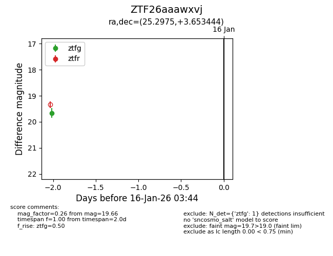
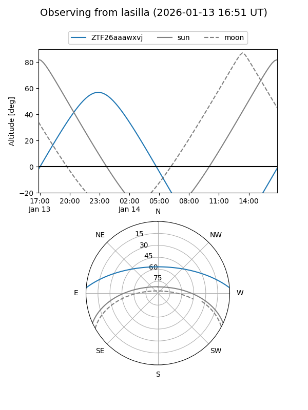

ZTF26aaawxvj
Target ZTF26aaawxvj at 2026-01-16 03:45
Aliases and brokers:
FINK: link
Lasair: link
ALeRCE: link
alt names
ZTF26aaawxvj (ztf,fink_ztf)
Coordinates:
equatorial (ra, dec) = 25.2975,+3.65344
equatorial (HMS+DMS) = 01:41:11.40,+03:39:12.40
galactic (l, b) = (146.1492,-56.95867)
Flags:
Photometry:
last ztfg=19.66
1 ztfg detections
Lightcurve

Visibility


Additional plots